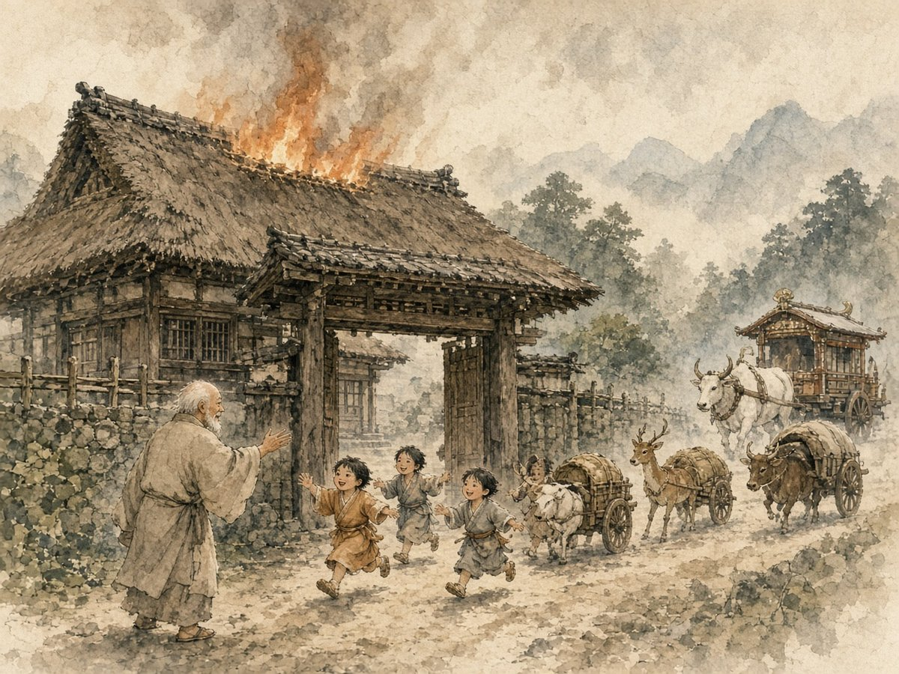

第5回三車火宅（さんしゃかたく）の譬え
配信日
出典『妙法蓮華経』譬喩品第三（三車火宅の譬え、法華七喩のひとつ）

ある長者の古い大きな屋敷が火事になりました。中の子どもたちは遊びに夢中で、火の怖さも分からず外へ出ようとしません。そこで父は「門の外に、おまえたちの欲しがっていた羊の車・鹿の車・牛の車があるよ」と呼びかけます。子どもたちは喜んで飛び出し、無事に助かりました。そして父は、約束の三つの車よりもはるかに立派な、大白牛車（だいびゃくごしゃ）を一人ひとりに等しく与えたのです。
「三界は安きこと無し 猶お火宅の如し 衆苦充満して 甚だ怖畏すべし」 出典 『妙法蓮華経』譬喩品第三、偈文の書き下し（三界無安 猶如火宅 衆苦充満 甚可怖畏）
三つの車はそれぞれの好みに合わせた方便の教え、大白牛車はすべての人を等しく仏にする一仏乗、法華経を表すと説かれます。燃えている家の中で遊び続けてしまうのは、私たちの日常の姿でもあります。